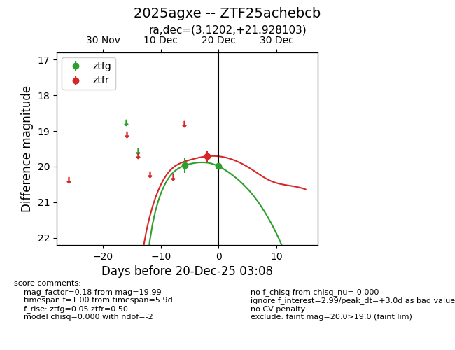
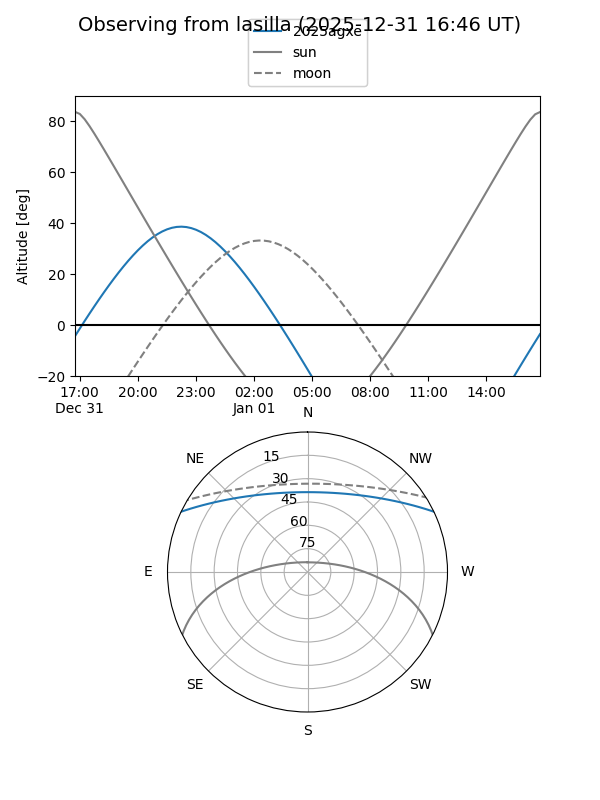
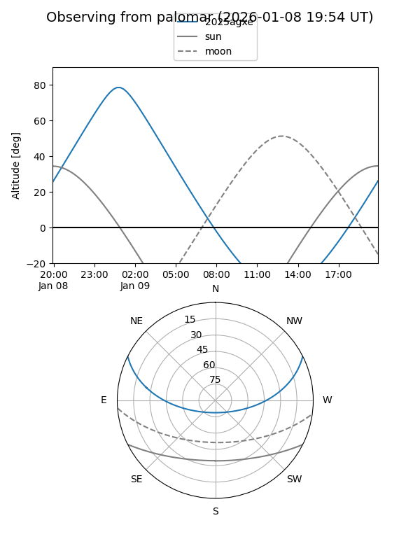
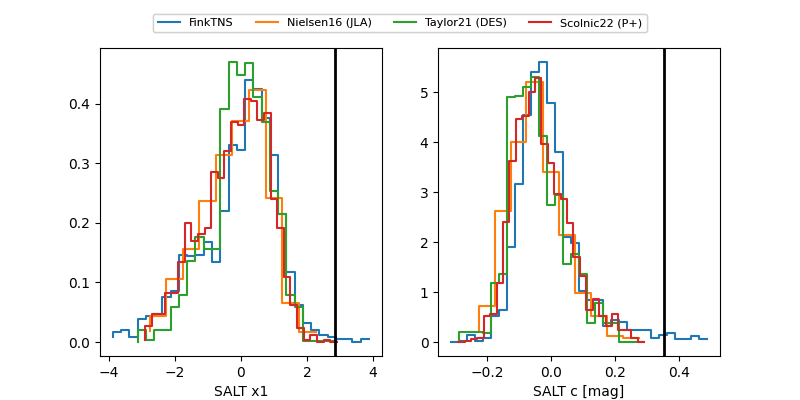

2025agxe
Target 2025agxe at 2025-12-22 14:21
Aliases and brokers:
FINK: fink-portal.org/ZTF25achebcb
Lasair: lasair-ztf.lsst.ac.uk/objects/ZTF25achebcb
ALeRCE: alerce.online/object/ZTF25achebcb
TNS: wis-tns.org/object/2025agxe
YSE: ziggy.ucolick.org/yse/transient_detail/2025agxe
alt names
ZTF25achebcb (ztf,fink_ztf)
2025agxe (tns,yse)
Coordinates:
equatorial (ra, dec) = 3.1202,+21.92810
equatorial (HMS+DMS) = 00:12:28.85,+21:55:41.17
galactic (l, b) = (111.1027,-40.04714)
Flags:
Photometry:
last ztfg=20.02, ztfr=19.71
3 ztfg, 1 ztfr detections
Lightcurve

Visibility


Additional plots
